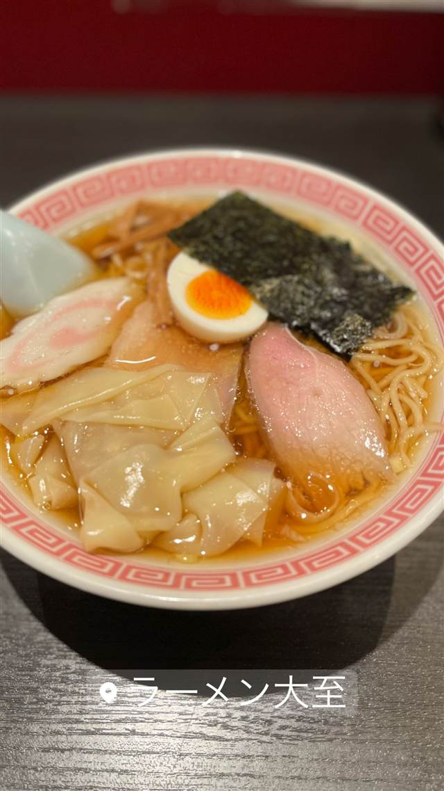

ラーメン大至
三ツ矢堂製麺出身の店主が作る、奇をてらわない一杯
ラーメン大至
湯島にある、素朴で丁寧な「普通のラーメン」を追求する一軒。店主は「三ツ矢堂製麺」上目黒店出身で、2007年7月の開業以来、流行を追わず質朴な一杯を作り続けている。看板のワンタンメンは、つるりとした大きめの皮のワンタンが特徴。
TRIVIA
豆知識
- 店主は「三ツ矢堂製麺」上目黒店出身
- 「普通のラーメンの最高峰」と評される、あえて奇をてらわないスタイル
REVIEWS
世間の評判
93.5ラーメンDB3.75食べログ
普通の最高峰と限定つけ麺の人気
- 普通の味の最高峰を掲げる完成度の高い一杯だという評価をする人が多い
- 細つけ麺乱打など季節ごとに変わる限定つけ麺の企画を楽しみにする人が多い
- つけ汁は美味しいが麺がもう少し太かったらさらに好みだったという声もある
ラーメンデータベース 口コミ606件・総合666位・最新 2026-08
| 創業 | 2007年7月30日開業 |
|---|---|
| 系譜 | 店主は「三ツ矢堂製麺」上目黒店出身で独立 |
| 看板 | ワンタンメン・チャーシューワンタンメン |
| こだわり | 流行を追わず奇をてらわない、質朴なラーメンを丁寧に作る。つるりとした大きめの喉越しのよいワンタン皮が特徴 |
| どこから | 都心 |
| 営業時間 | 月 休み 火〜金 11:00-15:00、17:00-20:45 土 11:00-15:00 日 休み |
| 予算 | 昼 ～¥999 夜 ～¥999 |
| 定休日 | 月曜・日曜・祝日 |
| 予約 | 予約不可 |
| 場所 | 御茶ノ水駅 東京都文京区湯島2-1-2 |
| メモ | 御茶ノ水・湯島駅近く。平日は昼夜、土曜は昼のみ営業、日月祝定休 |
食べたもの：ワンタンメン
NEARBY
近い店・同じ系統の店
-
 ★
醤油・中華そば 大口駅
中華そば 髙野
元美容師の店主が作る、昆布水に浸した自家製麺の中華そば
昼 ¥1,000～¥1,999 夜 ¥1,000～¥1,999
★
醤油・中華そば 大口駅
中華そば 髙野
元美容師の店主が作る、昆布水に浸した自家製麺の中華そば
昼 ¥1,000～¥1,999 夜 ¥1,000～¥1,999
-
 ★
醤油・中華そば 池尻大橋駅
八雲（やくも）
骨を一切使わないのに深いコクの特製ワンタン麺
昼 ¥501～¥1,000 夜 ¥501～¥1,000
★
醤油・中華そば 池尻大橋駅
八雲（やくも）
骨を一切使わないのに深いコクの特製ワンタン麺
昼 ¥501～¥1,000 夜 ¥501～¥1,000
-
 ★
醤油・中華そば 六本木駅
入鹿TOKYO 六本木店
鶏・豚・貝・海老を別々に炊く独自のカルテットスープ
昼 ¥1,000～¥1,999 夜 ¥1,000～¥1,999
★
醤油・中華そば 六本木駅
入鹿TOKYO 六本木店
鶏・豚・貝・海老を別々に炊く独自のカルテットスープ
昼 ¥1,000～¥1,999 夜 ¥1,000～¥1,999
-
 ★
醤油・中華そば 千歳船橋
中華そば 西川
永福町大勝軒などで8年修行した店主の煮干しそば、百名店5年連続
昼 ¥1,000～¥1,999 夜 ¥1,000～¥1,999
★
醤油・中華そば 千歳船橋
中華そば 西川
永福町大勝軒などで8年修行した店主の煮干しそば、百名店5年連続
昼 ¥1,000～¥1,999 夜 ¥1,000～¥1,999
-
 ★
醤油・中華そば 祖師ヶ谷大蔵駅
世田谷中華そば 祖師谷七丁目食堂
柴崎亭店主が手がける、煮干しと小豆島醤油の中華そば
昼 ～¥999 夜 ～¥999
★
醤油・中華そば 祖師ヶ谷大蔵駅
世田谷中華そば 祖師谷七丁目食堂
柴崎亭店主が手がける、煮干しと小豆島醤油の中華そば
昼 ～¥999 夜 ～¥999
-
 ★
醤油・中華そば 鷺沼
麺処 懐や
中村屋仕込み、一度に2杯しか作らない淡麗系
昼 ～¥999
★
醤油・中華そば 鷺沼
麺処 懐や
中村屋仕込み、一度に2杯しか作らない淡麗系
昼 ～¥999